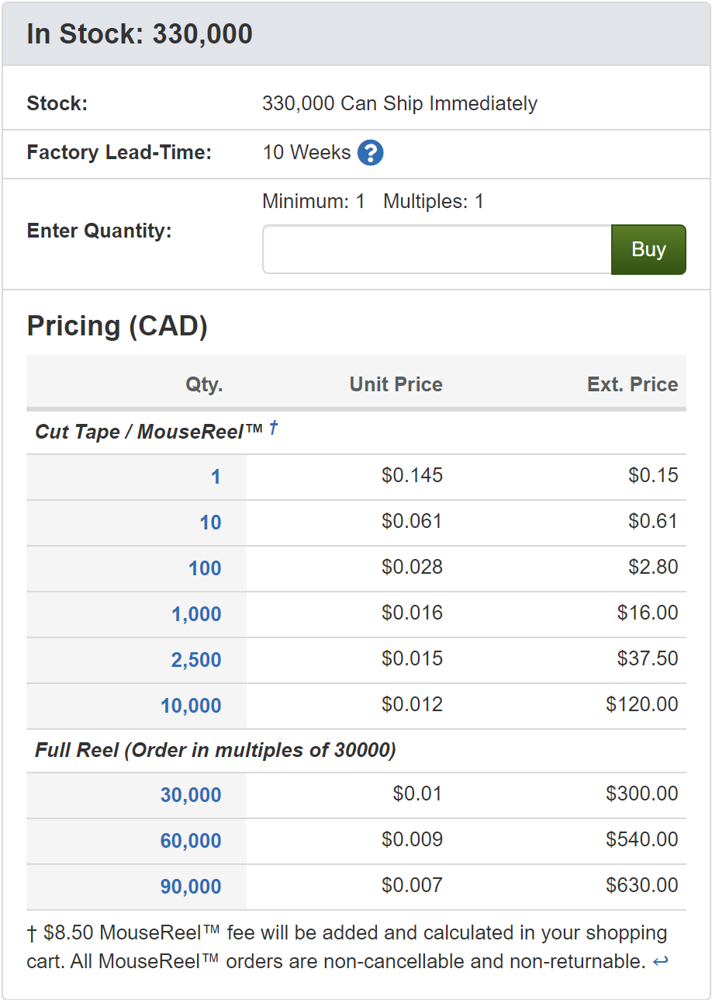
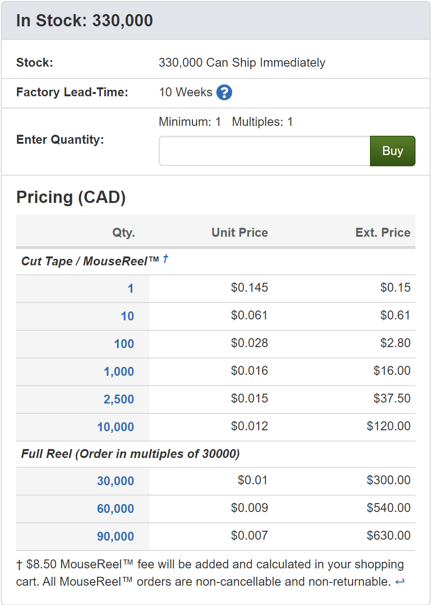

Chess Connect
Chess Connect was a group project done for my engineering capstone. The project took place from September 2022 until April 2023, spanning the last two semesters of my undergraduate degree.
The Chess Connect project is a custom-made chess set that tracks the movement of the pieces as the players play. The Chess Connect set includes a custom wooden board, 3D printed pieces, a built-in touchscreen LCD, embedded controllers, and the chess connect software. As you play a game on the board, your game data is transmitted to a nearby web server via Bluetooth. The web server then shows the data on a custom web application, allowing any device to watch the game unfold in real time.
The board has 64 squares, each with an inset LED and a Hall effect sensor underneath. The Hall sensors detect magnetic fields, so each piece has an embedded magnet aligned north or south (for white or black pieces respectively). This enables each square to detect one of three readings: No piece, black piece, or white piece. The starting position of a chess game allows the software to know what pieces are on what squares initially. This allows the software to track individual piece movements from the ternary sensor readings.
Chess Connect has three modes of play: Beginner mode, Normal mode, and Engine mode. Normal mode is a regular game of chess, where the pieces are tracked and broadcast with no further features. Beginner mode is the same, but adds one additional component: if users pick up and suspend a piece in the air on their turn, LEDs on the board will light up, indicating which squares the piece can move to. This helps beginners learn how the pieces can move around. Engine mode is meant for analyzing and studying games. Every time a piece is moved, Chess Connect connects to an external chess engine API to calculate the best move for the given position. This move is then displayed to the user.
The board includes a touchscreen LCD for user inputs and display. The user is initially presented with a choice of selecting between Beginner mode, Normal mode, and Engine mode. They are able to select the desired mode, start a game, and resign/draw active games. The screen also covers error handling. If users play out of turn, knock over pieces, play an illegal move, etc., they are informed via the LCD screen. Game terminations like checkmate and stalemate are also displayed on the LCD, along with engine-suggested moves in Engine mode. Users also had an option to change themes between light and dark mode.
Chess Connect runs on an Arduino Mega, utilizing the SoftwareSerial, Adafruit TFTLCD, Adafruit GFX, and Touchscreen libraries for the LCD and Bluetooth. Chess game logic was programmed on the Arduino in order to validate moves and supply possible moves in beginner mode. Input signals from the Hall sensors are multiplexed and run through an analog-to-digital converter (ADC) due to the large number of connections required into the Mega.
Chess Connect also includes a web application made using React.js, Node.js, and Express.js. The application uses the bluetooth-serial-port library to listen for Bluetooth signals from the Arduino, then communicates from backend to frontend via WebSockets. In engine mode, an external API is called, returning a move. This is communicated back to the embedded controller via Bluetooth. This allows the web application to update in real time as moves are made on the board.
Check out Chess Connect on GitHub to see our code, documentation, and more about the project. If you're curious how anything works or have any questions, please send me an email at celsjonathan@gmail.com.
The Chess Connect project is a custom-made chess set that tracks the movement of the pieces as the players play. The Chess Connect set includes a custom wooden board, 3D printed pieces, a built-in touchscreen LCD, embedded controllers, and the chess connect software. As you play a game on the board, your game data is transmitted to a nearby web server via Bluetooth. The web server then shows the data on a custom web application, allowing any device to watch the game unfold in real time.
The board has 64 squares, each with an inset LED and a Hall effect sensor underneath. The Hall sensors detect magnetic fields, so each piece has an embedded magnet aligned north or south (for white or black pieces respectively). This enables each square to detect one of three readings: No piece, black piece, or white piece. The starting position of a chess game allows the software to know what pieces are on what squares initially. This allows the software to track individual piece movements from the ternary sensor readings.
Chess Connect has three modes of play: Beginner mode, Normal mode, and Engine mode. Normal mode is a regular game of chess, where the pieces are tracked and broadcast with no further features. Beginner mode is the same, but adds one additional component: if users pick up and suspend a piece in the air on their turn, LEDs on the board will light up, indicating which squares the piece can move to. This helps beginners learn how the pieces can move around. Engine mode is meant for analyzing and studying games. Every time a piece is moved, Chess Connect connects to an external chess engine API to calculate the best move for the given position. This move is then displayed to the user.
The board includes a touchscreen LCD for user inputs and display. The user is initially presented with a choice of selecting between Beginner mode, Normal mode, and Engine mode. They are able to select the desired mode, start a game, and resign/draw active games. The screen also covers error handling. If users play out of turn, knock over pieces, play an illegal move, etc., they are informed via the LCD screen. Game terminations like checkmate and stalemate are also displayed on the LCD, along with engine-suggested moves in Engine mode. Users also had an option to change themes between light and dark mode.
Chess Connect runs on an Arduino Mega, utilizing the SoftwareSerial, Adafruit TFTLCD, Adafruit GFX, and Touchscreen libraries for the LCD and Bluetooth. Chess game logic was programmed on the Arduino in order to validate moves and supply possible moves in beginner mode. Input signals from the Hall sensors are multiplexed and run through an analog-to-digital converter (ADC) due to the large number of connections required into the Mega.
Chess Connect also includes a web application made using React.js, Node.js, and Express.js. The application uses the bluetooth-serial-port library to listen for Bluetooth signals from the Arduino, then communicates from backend to frontend via WebSockets. In engine mode, an external API is called, returning a move. This is communicated back to the embedded controller via Bluetooth. This allows the web application to update in real time as moves are made on the board.
Check out Chess Connect on GitHub to see our code, documentation, and more about the project. If you're curious how anything works or have any questions, please send me an email at celsjonathan@gmail.com.
Skill Explorer
Nulla at sollicitudin ante, nec porttitor lectus. Ut turpis nulla, tincidunt sed metus at, auctor condimentum velit. Mauris congue metus a sapien egestas posuere. Aliquam metus nisl, bibendum ac dui in, semper ullamcorper orci. Aliquam eu blandit risus. Fusce augue ipsum, varius quis risus eu, ultrices sodales justo. Nullam sed ex a nibh vulputate fermentum non et ligula. Proin quis hendrerit elit, nec gravida ligula.
Maecenas erat ante, iaculis lobortis viverra non, pretium id mauris. Maecenas fringilla accumsan purus ut pretium. Vestibulum ultricies condimentum lectus sit amet ultricies. Vivamus ut lacus id justo sollicitudin mattis. Ut finibus tellus in rutrum pretium. Pellentesque consequat bibendum dolor.
Maecenas erat ante, iaculis lobortis viverra non, pretium id mauris. Maecenas fringilla accumsan purus ut pretium. Vestibulum ultricies condimentum lectus sit amet ultricies. Vivamus ut lacus id justo sollicitudin mattis. Ut finibus tellus in rutrum pretium. Pellentesque consequat bibendum dolor.
Maecenas erat ante, iaculis lobortis viverra non, pretium id mauris. Maecenas fringilla accumsan purus ut pretium. Vestibulum ultricies condimentum lectus sit amet ultricies. Vivamus ut lacus id justo sollicitudin mattis. Ut finibus tellus in rutrum pretium. Pellentesque consequat bibendum dolor.
Maecenas erat ante, iaculis lobortis viverra non, pretium id mauris. Maecenas fringilla accumsan purus ut pretium. Vestibulum ultricies condimentum lectus sit amet ultricies. Vivamus ut lacus id justo sollicitudin mattis. Ut finibus tellus in rutrum pretium. Pellentesque consequat bibendum dolor.
Price Analysis
with Mouser API
with Mouser API
My time at Celestica was focused on development for a huge internal application called Celestica that covered every step of a project's life. QuoteApp was so big that I can't honestly explain it. From project creation, team management, distrubutor analysis, supplier RFQs, BOMs, cost analysis, price lookups, and resistor matrices, QuoteApp did everything. There were hundreds of functionalities that I never had a chance to see over my 16-months at Celestica, let alone work on or understand. One part of QuoteApp that I am very familiar with however, is the project price lookup.
First, let's talk about the problem. Projects at Celestica are big, and include a lot of moving parts (literally). These parts were sourced from a number of different distributors, such as Mouser and Arrow. When purchasing parts, Celestica employees would have to connect with the distributor, retrieving pricing data for different breakpoints. Then they would apply a number of Excel formulas and perform in-depth analysis on price breakpoints to determine the most economical options.
 Let's go through a quick example. We are looking to order some capacitors from Mouser. These capacitors are small, and are sold by the reel or on tape custom cut to a specific size. The reference picture shows the pre-determined reel sizes (1, 10, 100, 1000, 2500, 10000, 30000, 60000, 90000). If we want to buy 910 capacitors, we have a couple different options. We could buy a custom tape of 1000, or buy 100 nine times, and then add another 10, etc. Depending how many you buy at once, the per-unit price changes. But we also don't want excess assets that our customers don't need. There are a lot more factors to consider as well. There are additional fees for custom cut tape vs full reels, some projects have timing requirements that are affected by the factory lead time, certain parts have stock limitations, etc. This sometimes leads to days of analysis for one part, and some projects have thousands of parts.
In recent years, distributors have begun creating API's to access their part data. My job was to connect to and consume Mouser's APIs for searching and ordering parts, then to perform this pricing analysis automatically. This took the work from manual to programatic analysis, drastically improving effeciency for part lookups and freeing our employees to focus on other things with their time.
This project took roughly 5 months to complete, and the majority of the work came in the form of multiple thousand-line PL/SQL stored procedures/queries. This allowed me to work extensively alongside business analysts to design and test the logic, exposing me to valuable business experience.
Today this project is a small page in QuoteApp that is used every day, alongside similar functionality for other distributors and manufacturers, continuing to save hours of pricing analysis.
First, let's talk about the problem. Projects at Celestica are big, and include a lot of moving parts (literally). These parts were sourced from a number of different distributors, such as Mouser and Arrow. When purchasing parts, Celestica employees would have to connect with the distributor, retrieving pricing data for different breakpoints. Then they would apply a number of Excel formulas and perform in-depth analysis on price breakpoints to determine the most economical options.
 Let's go through a quick example. We are looking to order some capacitors from Mouser. These capacitors are small, and are sold by the reel or on tape custom cut to a specific size. The reference picture shows the pre-determined reel sizes (1, 10, 100, 1000, 2500, 10000, 30000, 60000, 90000). If we want to buy 910 capacitors, we have a couple different options. We could buy a custom tape of 1000, or buy 100 nine times, and then add another 10, etc. Depending how many you buy at once, the per-unit price changes. But we also don't want excess assets that our customers don't need. There are a lot more factors to consider as well. There are additional fees for custom cut tape vs full reels, some projects have timing requirements that are affected by the factory lead time, certain parts have stock limitations, etc. This sometimes leads to days of analysis for one part, and some projects have thousands of parts.
In recent years, distributors have begun creating API's to access their part data. My job was to connect to and consume Mouser's APIs for searching and ordering parts, then to perform this pricing analysis automatically. This took the work from manual to programatic analysis, drastically improving effeciency for part lookups and freeing our employees to focus on other things with their time.
This project took roughly 5 months to complete, and the majority of the work came in the form of multiple thousand-line PL/SQL stored procedures/queries. This allowed me to work extensively alongside business analysts to design and test the logic, exposing me to valuable business experience.
Today this project is a small page in QuoteApp that is used every day, alongside similar functionality for other distributors and manufacturers, continuing to save hours of pricing analysis.
Personal Website
This project is my personal website, which you're on right now! I needed a way to differentiate myself and to show my personality a bit (resumes can be a tad dull), which led me to the creation of this site.
As you can probably tell, this website includes a homepage where you can read about me, an education page where you can learn about some of my favourite courses during my undergrad, a project page (this one) where you can read about different projects I've worked on, and an experience page where you can read about my professional career in software engineering. I've also included an about me page if you're interested in learning who I am outside of my professional life.
This website was made from scratch using raw HTML, CSS, and JavaScript. Though I've worked with a number of different web frameworks like Vue and React, I decided that no framework was required for the limited functionality on this site. I use GitHub Pages to host and deploy the site for free. The source code for the website is all available on my GitHub profile.
As you can probably tell, this website includes a homepage where you can read about me, an education page where you can learn about some of my favourite courses during my undergrad, a project page (this one) where you can read about different projects I've worked on, and an experience page where you can read about my professional career in software engineering. I've also included an about me page if you're interested in learning who I am outside of my professional life.
This website was made from scratch using raw HTML, CSS, and JavaScript. Though I've worked with a number of different web frameworks like Vue and React, I decided that no framework was required for the limited functionality on this site. I use GitHub Pages to host and deploy the site for free. The source code for the website is all available on my GitHub profile.
GPA Converter
McMaster's GPA system is a bit strange. They follow a 12-point scale, with the numbers corresponding to different letter grades. 12 is an A+, an 11 is an A, a 1 is a D-, etc. Cumulative GPA calculations are done by simply adding the numbers up (multiplied by the units of the course) and averaging over the number of courses. This works great within McMaster but when asked for your GPA by employers, grad schools, or otherwise, they're usually looking for the the 4.0 scale.
The 4.0 scale is a little different. Some numbers are skipped, and the decrease is non-linear. This is to punish deviation towards lower grades. The 4.0 system values consistency more than a linear GPA system. For example, two grades of A and A would average out to 11 on the McMaster scale and the equivalent 3.7 on the 4.0 scale. However, two grades of A+ and A- would average to 11 on the McMaster scale, but only a 3.6 on the 4.0 scale.
What does this mean? Well, it means that we can't simply take the average given to us on our transcript or calculated based on our grades and convert it to the 4.0 scale. Instead, this calculation has to be done separately by converting each grade individually to the 4.0 scale and then averaging each one. This is a pain when you've done an undergrad with 46 courses, each worth a different number of units.
This GPA calculator is a simple tool that allows McMaster students to upload the pdf copy of their unofficial transcript (found on McMaster Mosaic) and have their 4.0 GPA calculated for them. I created this on Google Colab using Python. The source code for this small project is available on my GitHub profile. Conversion data and GPA calculation formulas are from the official McMaster website on grades, GPA, and GPA calculation.
The 4.0 scale is a little different. Some numbers are skipped, and the decrease is non-linear. This is to punish deviation towards lower grades. The 4.0 system values consistency more than a linear GPA system. For example, two grades of A and A would average out to 11 on the McMaster scale and the equivalent 3.7 on the 4.0 scale. However, two grades of A+ and A- would average to 11 on the McMaster scale, but only a 3.6 on the 4.0 scale.
What does this mean? Well, it means that we can't simply take the average given to us on our transcript or calculated based on our grades and convert it to the 4.0 scale. Instead, this calculation has to be done separately by converting each grade individually to the 4.0 scale and then averaging each one. This is a pain when you've done an undergrad with 46 courses, each worth a different number of units.
This GPA calculator is a simple tool that allows McMaster students to upload the pdf copy of their unofficial transcript (found on McMaster Mosaic) and have their 4.0 GPA calculated for them. I created this on Google Colab using Python. The source code for this small project is available on my GitHub profile. Conversion data and GPA calculation formulas are from the official McMaster website on grades, GPA, and GPA calculation.
Magic Dice Tray
The Magic Dice Tray is currently a work in progress, and is meant to give me more practical experience creating and training convolutional neural network (CNN) models.
The idea is to create a dice tray (box to hold and roll dice) for tabletop roleplaying games, like Dungeons & Dragons or Pathfinder, that automatically interprets and sums your dice rolls. These games use a set of dice beyond the classic 6-sided die (d6), including a d4, d6, d8, two d10's, a d12, and the famous 20-sided dice, the d20. The different geometries of these dice proves to be a challenge for machine learning models to identify, especially when rolled in mixed groups.
This project has a custom-made box, including an embedded Raspberry Pi 4 and camera module. The camera records a top-down view of the dice tray, capturing all the rolled dice. From here, object detection is done on the image to differentiate each die. Then the die type (d4, d6, d20 etc.) is classified using a CNN. Each different type of die has another CNN trained to identify the rolled number based on an image of that die. Finally, the identified numbers are summed together to give the final calculated total.
The difficulty of training machine learning models on this problem comes from the geometry of a subset of the dice, specifically the d4, d10 and d20. When viewing a 6-sided die from above, only the rolled side is visible. This is not at all the case for the d10 and d20. Depending on the angle of the image, multiple dice faces can appear to be the top number.
This project uses Python and Google Colab, alongside TensorFlow and Keras. The Raspberry Pi 4 runs on the Bullseye Debian Raspberry Pi OS.
This project (and project description) are both currently a WIP.
The idea is to create a dice tray (box to hold and roll dice) for tabletop roleplaying games, like Dungeons & Dragons or Pathfinder, that automatically interprets and sums your dice rolls. These games use a set of dice beyond the classic 6-sided die (d6), including a d4, d6, d8, two d10's, a d12, and the famous 20-sided dice, the d20. The different geometries of these dice proves to be a challenge for machine learning models to identify, especially when rolled in mixed groups.
This project has a custom-made box, including an embedded Raspberry Pi 4 and camera module. The camera records a top-down view of the dice tray, capturing all the rolled dice. From here, object detection is done on the image to differentiate each die. Then the die type (d4, d6, d20 etc.) is classified using a CNN. Each different type of die has another CNN trained to identify the rolled number based on an image of that die. Finally, the identified numbers are summed together to give the final calculated total.
The difficulty of training machine learning models on this problem comes from the geometry of a subset of the dice, specifically the d4, d10 and d20. When viewing a 6-sided die from above, only the rolled side is visible. This is not at all the case for the d10 and d20. Depending on the angle of the image, multiple dice faces can appear to be the top number.
This project uses Python and Google Colab, alongside TensorFlow and Keras. The Raspberry Pi 4 runs on the Bullseye Debian Raspberry Pi OS.
This project (and project description) are both currently a WIP.